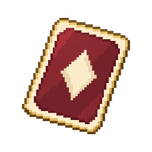
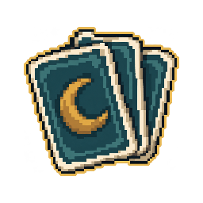
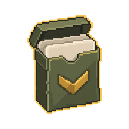
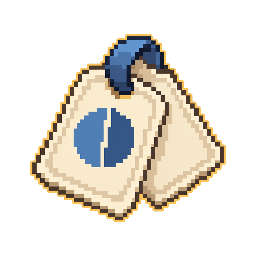

10 эскизов для выбора основы новых томов. Карты: К1–К5. Печати: П1–П5. Эти номера обозначают варианты формы, а не ID оригинальных томов.
Отдельный предпросмотр · Полный лист

Тонкая / плотная; целая / надорванная

Две / три / пять карт; разный разворот
Тонкая / толстая; разные перевязи

Коробка закрыта / открыта; карты выдвинуты

Пара / пачка; разный сдвиг и крепление
Круглая / угловатая; целая / треснувшая
Короткая / длинная ручка; разная подошва
Одна / двойная; разные ленты и формы
Плоская / толстая; целая / со сколом
Узкий / массивный; круглый / квадратный щиток